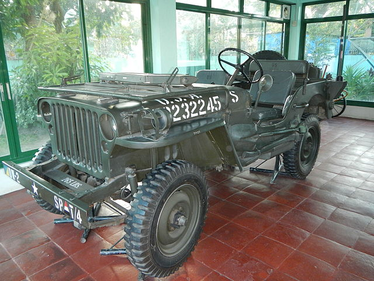

History
Tesla was founded in 2003 by Martin Eberhard and Marc Tarpenning with the goal of proving that people didn’t have to depend on gasoline cars to drive high quality vehicles. The company did have some financial struggles in its beginnings until Elon Musk later decided to fund the company with $7.5 million dollars in 2004 with his personal funds and become the chairman. In February 2005 the development of the Tesla Roadster began after having $13 million more dollars of funding from Elon Musk.
On July 19th, 2006 Tesla’s first production vehicle was unveiled by CEO Martin Eberhard and company’s chairman Elon Musk. The unveiling event was held at the Santa Monica airport. This even officially lead to Tesla growth as a car company. This vehicle was the Tesla Roadster.
model uno
The Tesla Roadster is powered by a 3-phase, 4-pole induction electric motor that provides 185 kw of output or 248hp and goes 0-60 in 4.6 seconds . The torque output is immediately available due to being an electric vehicle at 200lb-ft and remains consistent from 0-6000 rpms. The motor is also air-cooled and does not need liquid cooling. The most impressive part is that the motor weighs less than 70 pounds. This vehicle really highlights the beginning of the future for tesla and more importantly the future of all electric vehicles..